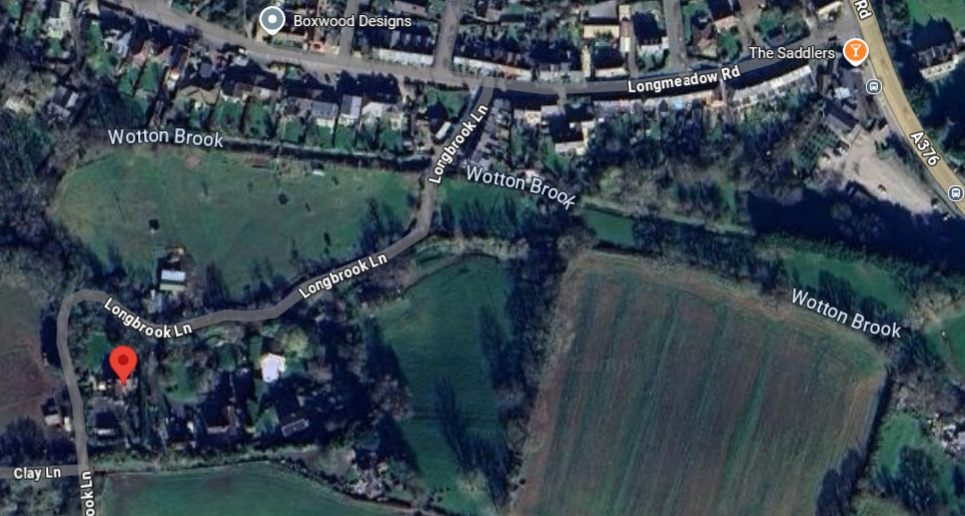

Directions
Andrew
& Françoise Lorenc, Millbrook Cottage, Longbrook Lane, Lympstone, Devon, EX8
5BE. Ph: 01395 263068.
Driving

From Exeter M5 junction30,
follow signposts to Exmouth, along the A376.
Turn right at the traffic lights in Lympstone next to the Saddlers Arms.
Turn left after ~150m into Longbrook
Lane, following the blue sign saying "Unsuitable for
large vehicles".
(This is known locally as Curly
Lane!) After ~200m there is a sharp bend
left.
Turn left 20m after the bend into Millbrook Cottage drive and left again into
Millbrook Cottage.
By train
During the day &
evening there are ~half-hourly trains from Exeter St Davids,
via Exeter Central, to Lympstone & Exmouth.
We are 15min from Lympstone
Village
station: Here are two of the many walking routes – 1 can be muddy
after heavy rain, 2 is drier if you stick to the road:
- Walk under the bridge (through the old
farming end of Lympstone), past the Redwing & church, and
up a slight hill.
Turn right at X-roads into narrow lane. Cross stream on footbridge by
ford. Turn left round shed.
Follow footpath to road (at sharp bend mentioned above); turn right &
Millbrook is on left.
- Walk through the old fishing end of
Lympstone, past the Swan
and the Globe.
- Except at high tide, go down the narrow Strand onto the beach, and walk round to Sowden End;
- If the tide is in, walk along the road.
Enjoy views of Exmouth, Powderham etc.
- Walk up Sowden Lane
into Longbrook Lane.
Millbrook Cottage is the 2nd entrance on the right.
Map
of Lympstone streets, OS
map (arrow shows Millbrook Cottage).